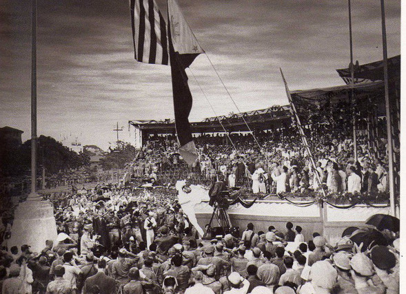

Độc lập dân tộc là gì?
Quyền thiêng liêng, vì nhân dân, độc lập thực chất, thống nhất lãnh thổ.

Thuyết trình · Chương 3
|
Quyền thiêng liêng, vì nhân dân, độc lập thực chất, thống nhất lãnh thổ.
Con đường cách mạng vô sản, Đảng lãnh đạo, đại đoàn kết, chủ động, bạo lực cách mạng.
CNXH hướng tới dân làm chủ, phát triển đất nước, nâng cao đời sống và bảo đảm độc lập bền vững.
Độc lập dân tộc trong tư tưởng Hồ Chí Minh không dừng ở danh nghĩa chính trị. Đó là quyền thiêng liêng của dân tộc, phải thực sự, hoàn toàn, gắn với thống nhất lãnh thổ và đời sống tự do, hạnh phúc của nhân dân.

Mọi dân tộc đều có quyền sống, quyền tự do, quyền tự quyết.
Độc lập phải đem lại tự do, ấm no, hạnh phúc cho nhân dân.
Không chấp nhận độc lập hình thức hoặc lệ thuộc trá hình.
Độc lập gắn với thống nhất quốc gia và toàn vẹn lãnh thổ.

1919: Yêu sách của nhân dân An Nam · 1930: Chánh cương vắn tắt · 1945: Tuyên ngôn Độc lập · 1946: Toàn quốc kháng chiến.


Khắc phục bế tắc của các khuynh hướng cứu nước cũ; gắn độc lập dân tộc với mục tiêu xã hội tiến bộ hơn.
Đường lối đúng, tổ chức chặt chẽ, khả năng tập hợp và giáo dục quần chúng.
Cách mạng là sự nghiệp của quần chúng; liên minh công - nông là nền tảng.
Cách mạng thuộc địa không lệ thuộc hoàn toàn vào cách mạng ở chính quốc.
Sức mạnh quần chúng được tổ chức; kết hợp lực lượng chính trị và vũ trang, đấu tranh chính trị và đấu tranh vũ trang.


Nhân dân làm chủ, kinh tế phát triển, đời sống được nâng cao, xóa bỏ áp bức bóc lột, thực hiện công bằng và tạo điều kiện cho con người phát triển.
Độc lập chính trị chưa đủ nếu không phát triển kinh tế, nâng cao đời sống và hoàn thành mục tiêu giải phóng con người.
Dân chủ, lực lượng sản xuất phát triển, văn hóa - đạo đức tiến bộ, nhân dân là chủ thể xây dựng và hưởng thành quả.
Nhân dân là chủ, Nhà nước phục vụ nhân dân.
Công nghiệp, nông nghiệp, khoa học - kỹ thuật phát triển.
Dân tộc, khoa học, đại chúng; nâng cao dân trí.
Dân chủ, công bằng, tiến bộ; chăm lo đời sống nhân dân.
Chủ nghĩa Mác - Lênin, vận dụng phù hợp với Việt Nam.
Giữ vững chủ quyền và lợi ích quốc gia - dân tộc.
Học tập kinh nghiệm quốc tế, không sao chép mô hình.
Xây yếu tố mới, chống chủ nghĩa cá nhân, tham nhũng, lãng phí, quan liêu.
Tiền đề chính trị để nhân dân tự lựa chọn con đường phát triển và xây dựng xã hội mới.
Cơ sở phát triển kinh tế, nâng cao đời sống, củng cố đoàn kết và sức mạnh quốc gia.

Độc lập dân tộc trong tư tưởng Hồ Chí Minh luôn gắn với thống nhất đất nước và nền tảng đoàn kết toàn dân.

Không trả lời theo kiểu chỉ chọn một. Chủ nghĩa xã hội là mục tiêu chiến lược của cách mạng Việt Nam sau khi giành độc lập; đồng thời là con đường và điều kiện để bảo đảm độc lập dân tộc bền vững, phát triển đất nước, đem lại tự do, ấm no, hạnh phúc và quyền làm chủ của nhân dân.
Cách mạng không dừng ở giành chính quyền. Sau độc lập, nhiệm vụ tiếp theo là xây dựng một xã hội do nhân dân làm chủ, công bằng và phát triển.
CNXH làm cho độc lập có nội dung thực chất: kinh tế mạnh hơn, đời sống nhân dân tốt hơn, xã hội ổn định hơn, quốc gia có năng lực tự bảo vệ.
Chủ nghĩa xã hội là mục tiêu chiến lược, nhưng mục tiêu ấy phải phục vụ con người và làm cho nền độc lập có ý nghĩa thực chất.